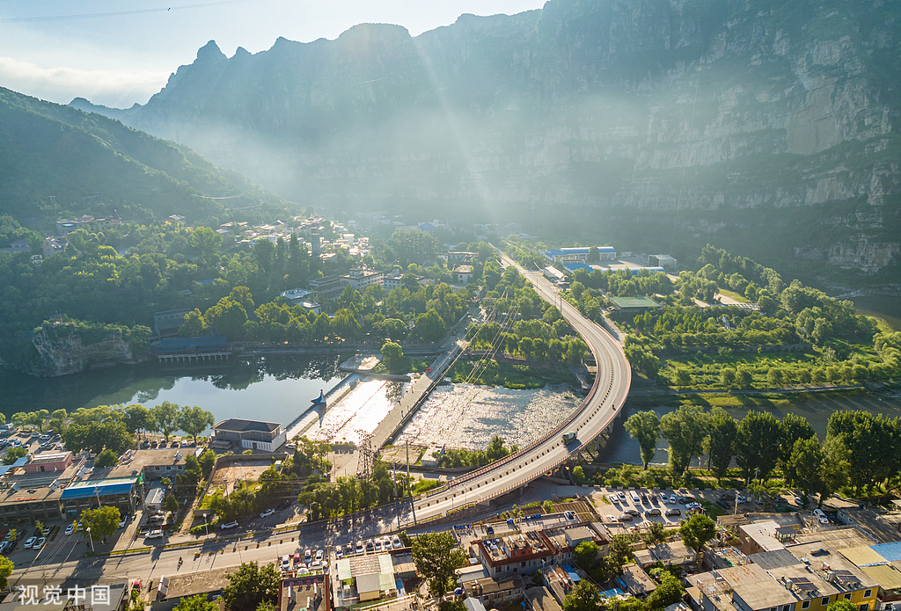
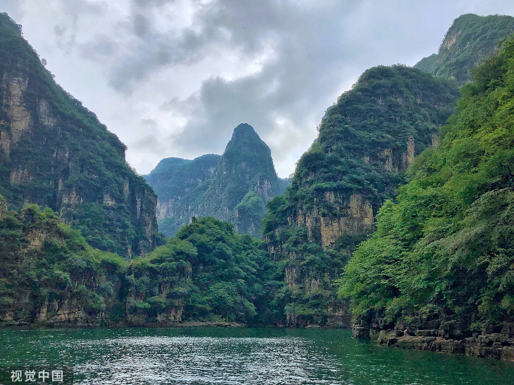
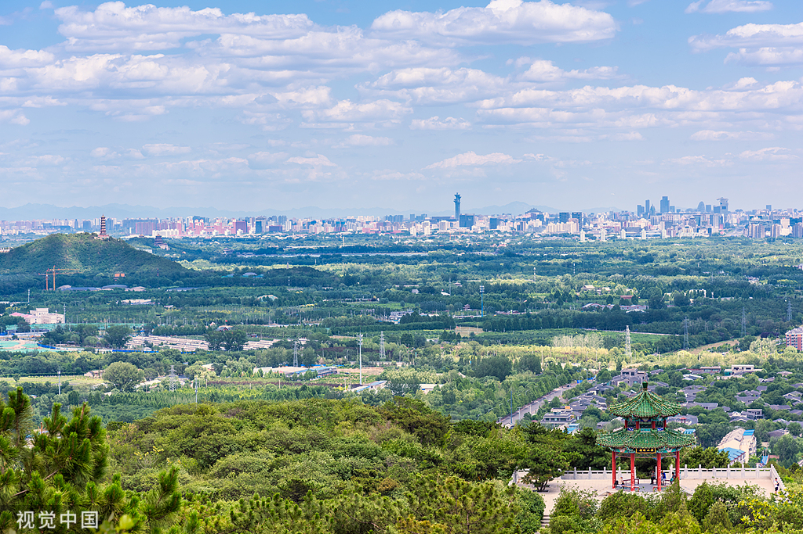
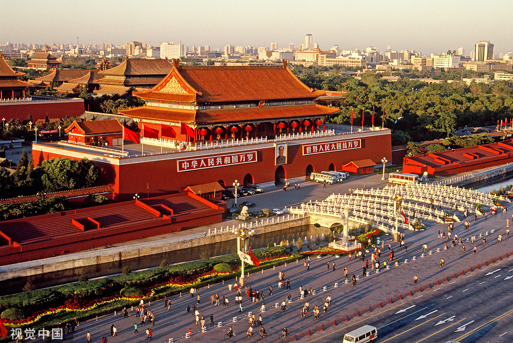

4-5月春暖花开，9-11月秋高气爽，是游览北京的黄金时间。
地铁覆盖主要景点，下载“亿通行”扫码乘车，公交需上下车刷卡。
故宫、国博等热门场馆需提前1-7天在官方平台实名预约。
烤鸭、炸酱面、豆汁儿、卤煮火烧……胡同深处藏着最地道的老北京味儿。
皇家园林，以秋季红叶闻名，可登高远眺京城全景。

北方罕见的喀斯特山水，被誉为“北方小桂林”。

峡谷湖泊风光，冬季还有冰灯艺术节，人称“北京小三峡”。

城市森林氧吧，步道平缓，适合全家徒步和观鸟。
世界文化遗产，明清皇家宫殿建筑群，珍藏文物无数。
明清皇帝祭天场所，祈年殿与回音壁展现古代建筑智慧。
中国现存最大皇家园林，昆明湖、万寿山、长廊如诗如画。
明代长城精华，“不到长城非好汉”的豪情在此实现。

世界最大城市广场，清晨看升旗，感受庄严与自豪。